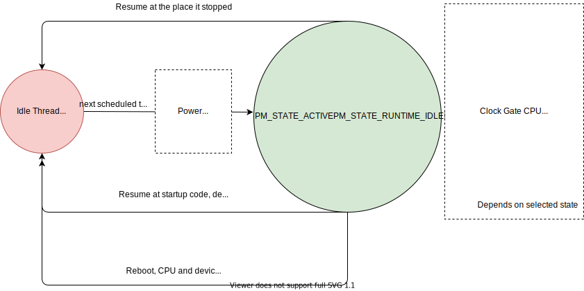

Device Power Management Infrastructure¶
The device power management infrastructure consists of interfaces to the Device Driver Model. These APIs send control commands to the device driver to update its power state or to get its current power state.
Zephyr RTOS supports two methods of doing device power management.
Runtime Device Power Management
System Power Management
Runtime Device Power Management¶
In this method, the application or any component that deals with devices directly and has the best knowledge of their use, performs the device power management. This saves power if some devices that are not in use can be turned off or put in power saving mode. This method allows saving power even when the CPU is active. The components that use the devices need to be power aware and should be able to make decisions related to managing device power.
In this method, the SOC interface can enter CPU or SOC power states quickly when
pm_system_suspend() gets called. This is because it does not need to
spend time doing device power management if the devices are already put in the
appropriate power state by the application or component managing the devices.
System Power Management¶
In this method device power management is mostly done inside
pm_system_suspend() along with entering a CPU or SOC power state.
If a decision to enter a lower power state is made, the implementation would enter it only after checking if the devices are not in the middle of a hardware transaction that cannot be interrupted. This method can be used in implementations where the applications and components using devices are not expected to be power aware and do not implement runtime device power management.
This method can also be used to emulate a hardware feature supported by some SOCs which triggers automatic entry to a lower power state when all devices are idle. Refer to Busy Status Indication to see how to indicate whether a device is busy or idle.
Device Power Management States¶
The power management subsystem defines device states in
pm_device_state. These states are classified based on the degree of
device context that gets lost in those states, kind of operations done to save
power, and the impact on the device behavior due to the state transition. Device
context includes device registers, clocks, memory etc.
Device Power Management Operations¶
Zephyr RTOS power management subsystem provides a control function interface to device drivers to indicate power management operations to perform. Each device driver defines:
The device’s supported power states.
The device’s supported transitions between power states.
The device’s necessary operations to handle the transition between power states.
The following are some examples of operations that the device driver may perform in transition between power states:
Save/Restore device states.
Gate/Un-gate clocks.
Gate/Un-gate power.
Mask/Un-mask interrupts.
Device Model with Power Management Support¶
Drivers initialize the devices using macros. See Device Driver Model for
details on how these macros are used. Use the DEVICE_DEFINE macro to initialize
drivers providing power management support via the PM control function.
One of the macro parameters is the pointer to the PM action callback.
If the driver doesn’t implement any power control operations, it can initialize
the corresponding pointer with NULL.
Busy Status Indication¶
The SOC interface executes some power policies that can turn off power to devices, causing them to lose their state. If the devices are in the middle of some hardware transaction, like writing to flash memory when the power is turned off, then such transactions would be left in an inconsistent state. This infrastructure guards such transactions by indicating to the SOC interface that the device is in the middle of a hardware transaction.
When the pm_system_suspend() is called, depending on the power state
returned by the policy manager, the system may suspend or put devices in low
power if they are not marked as busy.
Wakeup capability¶
Some devices are capable of waking the system up from a sleep state.
When a device has such capability, applications can enable or disable
this feature on a device dynamically using
pm_device_wakeup_enable().
This property can be set on device declaring the property wakeup-source in
the device node in devicetree. For example, this devicetree fragment sets the
gpio0 device as a “wakeup” source:
gpio0: gpio@40022000 {
compatible = "ti,cc13xx-cc26xx-gpio";
reg = <0x40022000 0x400>;
interrupts = <0 0>;
status = "disabled";
label = "GPIO_0";
gpio-controller;
wakeup-source;
#gpio-cells = <2>;
};
By default, “wakeup” capable devices do not have this functionality enabled
during the device initialization. Applications can enable this functionality
later calling pm_device_wakeup_enable().
Note
This property is only used by the system power management to identify devices that should not be suspended. It is responsability of driver or the application to do any additional configuration required by the device to support it.
Power Domain¶
Power domain on Zephyr is represented as a regular device. The power management
subsystem ensures that a domain is resumed before and suspended after devices
using it. When CONFIG_PM_DEVICE_RUNTIME is enabled, every time a
device is suspended or resumed the same action is done in the domain the
device belongs.